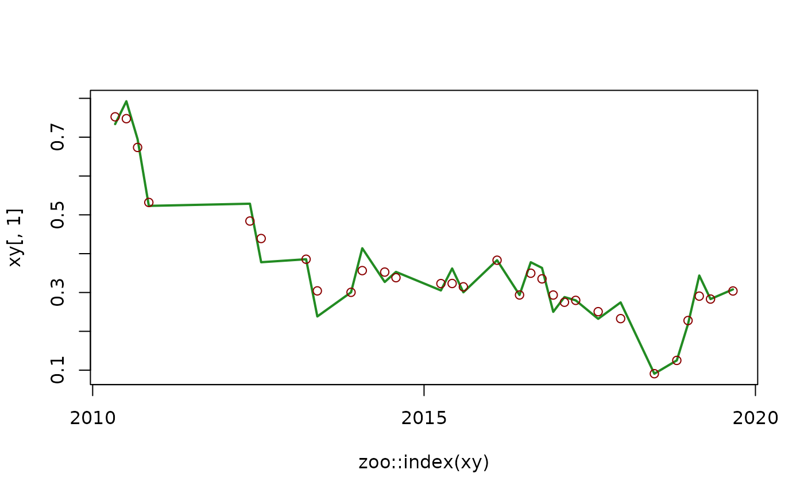

Optimize Loess Models for Time Series Resampling
Source:R/utils_optimize_loess.R
utils_optimize_loess.RdInternal function used in zoo_resample(). It finds the span parameter of a univariate Loess (Locally Estimated Scatterplot Smoothing.) model y ~ x fitted with stats::loess() that minimizes the root mean squared error (rmse) between observations and predictions, and returns a model fitted with such span.
Arguments
- x
(required, numeric vector) predictor, a time vector coerced to numeric. Default: NULL
- y
(required, numeric vector) response, a column of a zoo object. Default: NULL
- max_complexity
(required, logical). If TRUE, RMSE optimization is ignored, and the model of maximum complexity is returned. Default: FALSE
See also
Other tsl_processing_internal:
utils_drop_geometry(),
utils_global_scaling_params(),
utils_optimize_spline(),
utils_rescale_vector()
Examples
#zoo time series
xy <- zoo_simulate(
cols = 1,
rows = 30
)
#optimize loess model
m <- utils_optimize_loess(
x = as.numeric(zoo::index(xy)), #predictor
y = xy[, 1] #response
)
print(m)
#> Call:
#> stats::loess(formula = y ~ x, data = model_df, enp.target = complexity_value,
#> degree = 1, surface = "direct")
#>
#> Number of Observations: 30
#> Equivalent Number of Parameters: 18.67
#> Residual Standard Error: 0.04768
#plot observation
plot(
x = zoo::index(xy),
y = xy[, 1],
col = "forestgreen",
type = "l",
lwd = 2
)
#plot prediction
points(
x = zoo::index(xy),
y = stats::predict(
object = m,
newdata = as.numeric(zoo::index(xy))
),
col = "red4"
)
